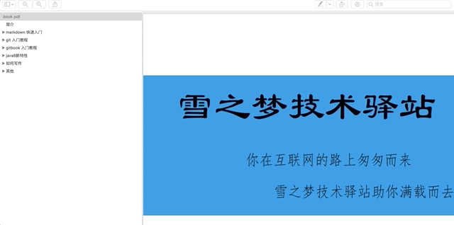
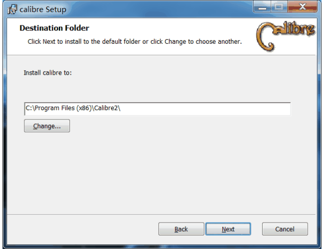
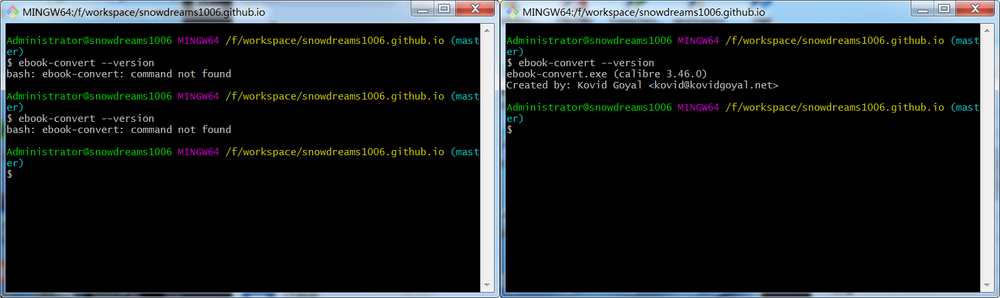
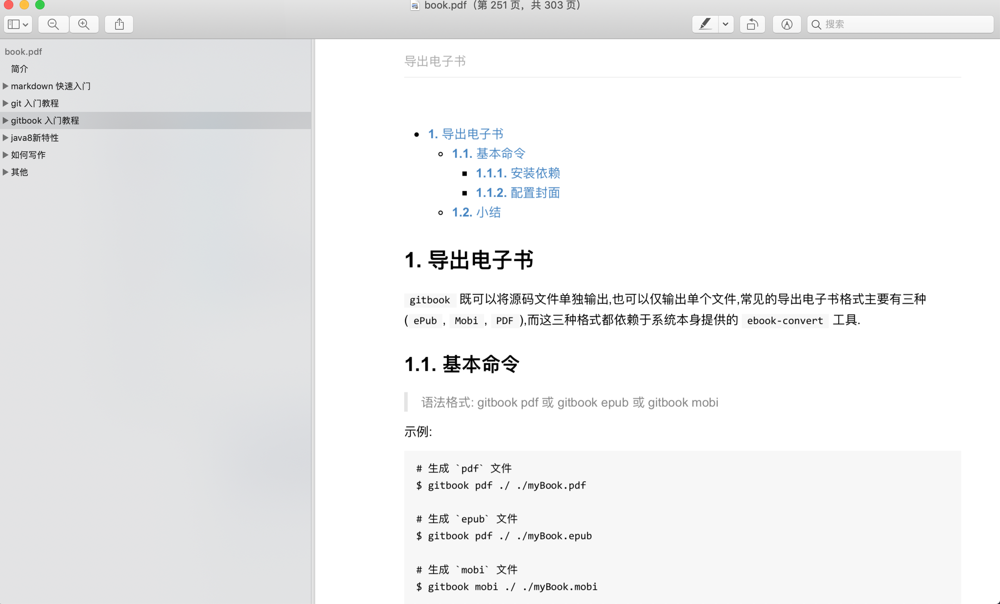
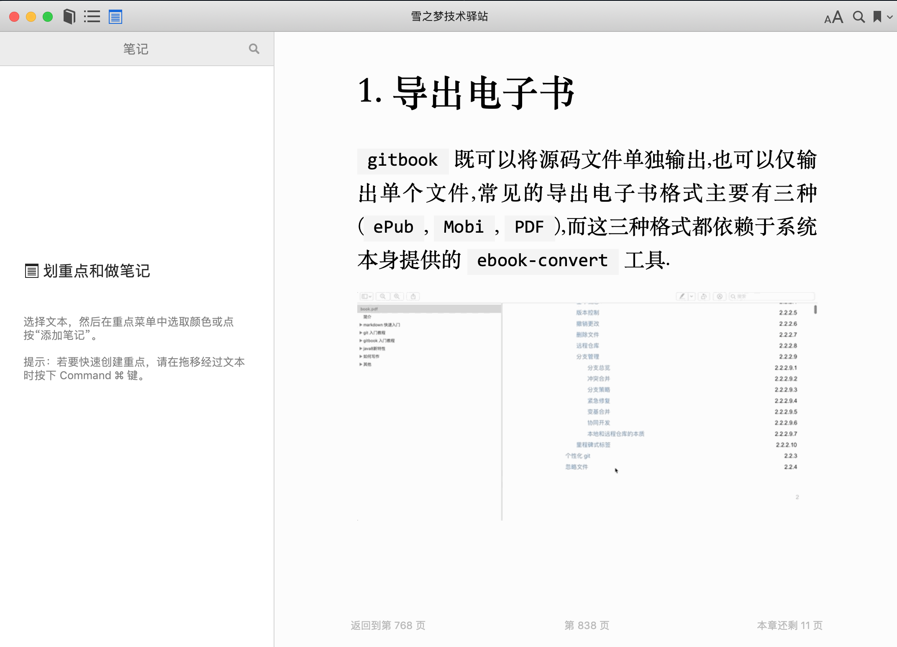
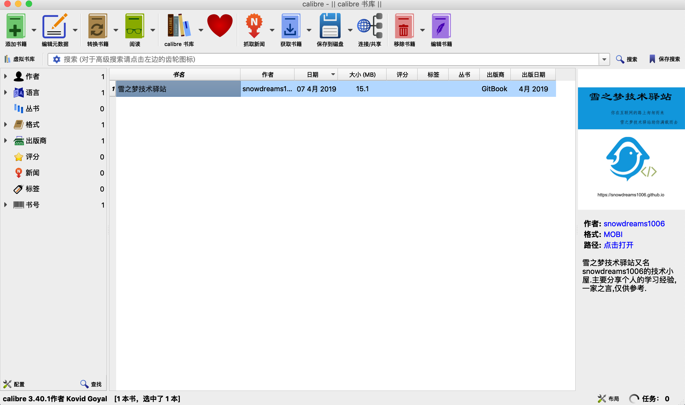

1. 导出电子书
gitbook 既可以将源码文件单独输出,也可以仅输出单个文件,常见的导出电子书格式主要有三种(ePub, Mobi, PDF),而这三种格式都依赖于系统本身提供的 ebook-convert 工具.

1.1. 安装依赖
如果直接运行 gitbook pdf 相关命令,可能会报错,提示需要安装 ebook-convert 插件,根据提示本地需要安装 calibre 软件,这样 gitbook 才能正常导出电子书.
calibre 官网: https://calibre-ebook.com/
1.1.1. linux 系统
下载地址: https://calibre-ebook.com/download_linux
- 下载应用
$ sudo -v && wget -nv -O- https://download.calibre-ebook.com/linux-installer.sh | sudo sh /dev/stdin
- 配置软链接
$ sudo ln -s /usr/bin/nodejs /usr/bin/node
1.1.2. mac 系统
下载地址: https://calibre-ebook.com/download_osx
- 下载应用
将 calibre.app 移动到应用程序文件,然后尝试是否能正常打开应用.
- 配置软链接
$ sudo ln -s /Applications/calibre.app/Contents/MacOS/ebook-convert /usr/local/bin
- 测试命令
$ ebook-convert --version
如果没有输出
ebook-convert版本信息,可能需要配置环境变量.
1.1.3. windows 系统
下载地址 : https://calibre-ebook.com/download_windows
和一般的应用下载安装方式一样,无外乎选择一下软件安装位置和书籍存放目录,安装过程略过,动图演示.

软件安装前如果使用命令行运行 ebook-convert 相关命令会提示无法查找该命令,安装后需要重新打开新的命令行工具再次运行 ebook-convert --version 就能输出版本信息,表示安装成功.

只有新打开的命令行窗口运行
ebook-convert才会生效1,原来的命令行窗口依旧没有会报错的呢,记住啦!
示例:
# Administrator@snowdreams1006 MINGW64 /f/workspace/snowdreams1006.github.io (master)
$ ebook-convert --version
# ebook-convert.exe (calibre 3.46.0)
# Created by: Kovid Goyal <kovid@kovidgoyal.net>
1.2. 配置封面
所有格式的电子书都可以配置自定义封面,在项目的根目录下提供 cover.jpg 和 cover_small.jpg 两种封面图片时,生成电子书会自动增加封面页.
当然你也可以使用 autocover 插件 自动生成封面,不过本人才疏学浅,几经尝试始终没有成功,如果有人成功了记得给我留言下哈!
封面的基本要求:
cover.jpg尺寸大小:1800X2360px,cover_small.jpg尺寸大小:200x262px;- 无边界
- 清晰可见的书名
- 任何重要的文字在小版本封面图片中也要清晰可见
更多封面相关规范请参考 https://toolchain.gitbook.com/ebook.html
1.3. 基本命令
语法格式: gitbook pdf 或 gitbook epub 或 gitbook mobi
示例:
# 生成 `pdf` 文件并输出 `debug` 级别日志
$ gitbook pdf ./ ./myBook.pdf --log=debug
# 生成 `epub` 文件并输出 `debug` 级别日志
$ gitbook epub ./ ./myBook.epub --log=debug
# 生成 `mobi` 文件并输出 `debug` 级别日志
$ gitbook mobi ./ ./myBook.mobi --log=debug
相信大家对
1.3.1. 生成 PDF 文件
示例:
$ gitbook pdf
默认在当前项目的根目录下生成 book.pdf 文件名,如果配有封面,则首页显示封面,否则无封面.

1.3.2. 生成 ePub 文件
示例:
$ gitbook epub
默认在当前项目的根目录下生成 book.epub 文件名,如果配有封面,则首页显示封面,否则无封面.

1.3.3. 生成 mobi 文件
示例:
$ gitbook mobi
默认在当前项目的根目录下生成 book.mobi 文件名,如果配有封面,则首页显示封面,否则无封面.

1.4. 小结
本节主要介绍了如何导出电子书,概括来说,首先系统需要安装 ebook-convert 工具,然后配置电子书封面,最后直接导出为目标格式(ePub, Mobi, PDF)进行输出.
随着电子书内容越来越多,生成电子书所花费的时间也越来越久,实属正常,耐心等待即可.
输出
debug日志:gitbook pdf --log=debug
作者: 雪之梦技术驿站
来源: 雪之梦技术驿站
本文原创发布于「雪之梦技术驿站」,转载请注明出处,谢谢合作!